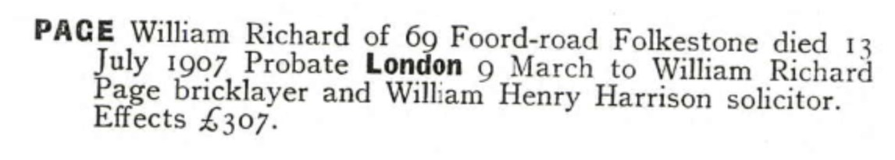

William Richard Page c1837 - 1907
[ Home ] | [ Calendar ] | [ Surnames Index ] | [ Errors ] | [ Family History ]A bricklayer and the child of Stephen Page (an agricultural labourer) and Mary Butcher, William Page, the first cousin three-times-removed on the father's side of Nigel Horne, was born in Folkestone, Kent, England c. 1837, was baptised there at Ss Mary & Eanswith Church on 19 Nov 1837 was married twice - to Margaret Drake (on 3 Feb 1860 in Folkestone) Jane Ormrod (on 1 Aug 1887 in Ashford, Kent, England, following the death of Margaret c. 1881)4. He had 3 children with Margaret Drake: William Richard, James Henry and Frederick Stephen.
During his life, he was living at his birthplace on 6 Jun 18418, at Sandfield House in Folkestone on 2 Apr 18717, and at 69 Foord Road in Folkestone in 1907.
He died on 13 Jul 1907 at Victoria Hospital in Folkestone1,2,3 and was buried at St John The Baptist, Folkestone on 17 Jul 19075,6.
Parents
- Stephen was born in 1817
- Mary Julia was born in 1819
Children
- James Henry was born on 14 Oct 1861
- Frederick Stephen was born c. Nov 1863
Citations
- England & Wales Government Probate Death Index 1858-2019 - Findmypast
- England & Wales deaths 1837-2007 - Findmypast
- Kent, Folkestone Cheriton Road Cemetery Memorial Inscriptions - Findmypast
- England Marriages 1538-1973 - Findmypast
- Kent, Canterbury Archdeaconry burials 1538-1988 - Findmypast
- England Deaths & Burials 1538-1991 - Findmypast
- 1871 England, Wales & Scotland Census - Findmypast (was age 33 and the head of the household)
- 1841 England, Wales & Scotland Census - Findmypast (was age 3)
Media
William Richard Page - Probate

Kent, Canterbury Archdeaconry marriages 1538-1928 - GBPRS/CANT/M/97000146/1
England Marriages 1538-1973 - R_848276756
England Marriages 1538-1973 - R_848279895
England & Wales deaths 1837-2007 - BMD/D/1907/3/AZ/000221/250
Kent, Canterbury Archdeaconry burials 1538-1988 - GBPRS/CANT/D/95470811
1871 England, Wales & Scotland Census - GBC/1871/0014384649
England & Wales marriages 1837-2005 - BMD/M/1887/3/AZ/000209/008
Kent Baptisms - GBPRS/CANT/B/96147383
England Deaths & Burials 1538-1991 - R_276346650
Kent, Folkestone Cheriton Road Cemetery memorial inscriptions - GBPRS/KENT/MIS00006787
England & Wales Government Probate Death Index 1858-2019 - GBOR/GOVPROBATE/C/1908-1908/00040664
Kent marriages and banns - PRS/KENT/MAR/0012409/1
Family Tree

Map
Generated by ged2site. Last updated on Jul 3, 2024
Known Issues
Birth date (abt 1837) has no citations
Residence record for 1907 contains no citation
May have been living with mother on 6 Jun 1841, but the addresses don't match or aren't detailed enough to be sure
May have been living with father on 6 Jun 1841, but the addresses don't match or aren't detailed enough to be sure